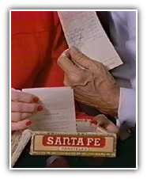
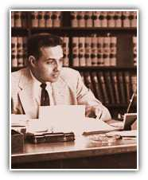

Help Pours In
The story has almost become legend by now: how the people of Russell chipped in a dollar here, thirty cents there, to fill a cigar box at Dawson's Drug store with $1,800 to pay Bob Dole's hospital bills. They kept track of the donations on slips of paper. Bob Dole still keeps the cigar box and the receipts in his office desk as a permanent reminder of the generosity and love of the people of Russell.
A New
Goal
During his years of recovery, it was clear that he would never realize his boyhood dream of becoming a doctor. So Bob Dole set his sights on a new goal. He planned to study law and look for ways to give back to the people of Russell who had done so much for him. In 1952 he earned his law degree from Washburn University in Topeka, Kansas.
A Call to Public Service
When he returned home to Russell, local leaders suggested that Dole repay his community by using his leadership, determination and intelligence to serve them in elected office. They persuaded him to run for state legislature. And he won.

More opportunities. Smaller government. Stronger and safer families
Homepage | Register | Volunteers | Donations
About the Team | Dole Interactive | Newsroom | The Dole Agenda | On the Campaign Trail | Get Involved
Originally Paid for by Dole Kemp '96 Campaign Committee
Original Web Design by Presage Internet Campaigns
To Learn more about Bob Dole, Please Visit the Dole Institute
This Web Site is Presented for Educational Purposes by 4President.org